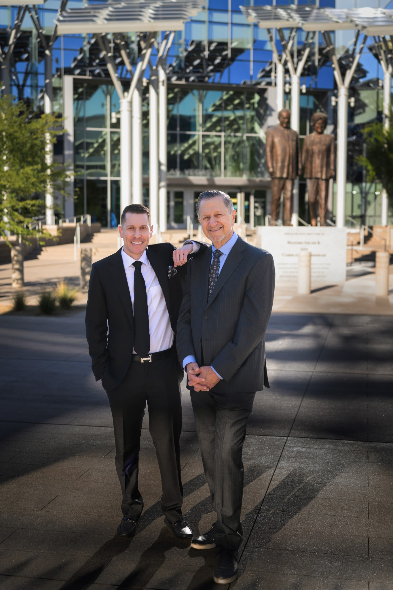
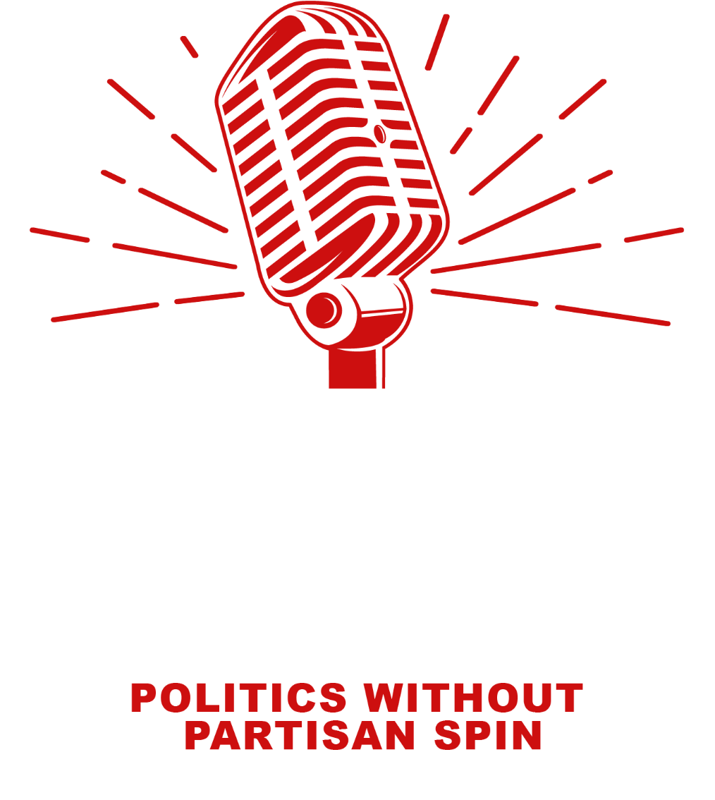
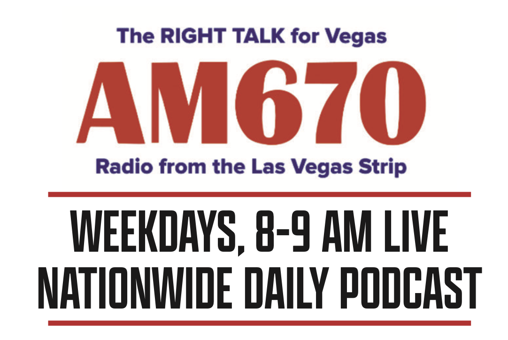

Politics without the spin
Meet in the
middle.
Thoughtful, candid conversations about the news shaping Las Vegas—and the country beyond it.

AM 670 · RADIO FROM THE LAS VEGAS STRIP
NATIONWIDE DAILY PODCAST

LATEST EPISODES
Listen to
the show.
Catch up on the newest conversations from The Middle Ground. Choose an episode and listen right here.
THE VOICE OF EXPERIENCE
Fifty years in the room where it happens.
Veteran political consultant and media expert Tom Letizia brings a rare combination of perspective, experience and independence to the microphone.
A broadcast owner, former operator of one of Las Vegas’ largest advertising agencies, and architect of seven consecutive Las Vegas mayoral victories, Tom goes beyond the talking points to ask what really matters.
Every episode features candid conversations with local politicians, journalists and newsmakers—giving listeners a practical, informed view of today’s most important stories.
Not far right.
Not far left.
Forward.

BEHIND THE SHOW
Russell
Letizia
Executive Producer
Russell is the driving force behind the microphone—crafting engaging content, coordinating guest appearances and keeping every conversation timely, relevant and dynamic.
A second-generation leader at Letizia Agency, he blends the family’s deep media experience with modern digital strategy. His eye for compelling stories helps The Middle Ground stay true to its purpose: informed dialogue without the noise.
Visit Letizia Agency ↘START YOUR MORNING IN THE MIDDLE